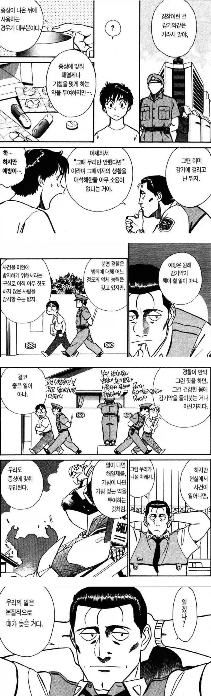

경찰의 역할이란?
댓글
뭐 저게 이상적이긴 하지
맞말
교도소 한번 갔다오면 1드론 감시. 죄 하나당 드론이 늘어나서 24시간 감시하다가 뭔가 불법이나 죄를 짓는순간 주장약 테트릴 24그람 들어간 드론이 가슴에 붙어서 콰광!
법은 사후약방문이다. 경찰이든 사법적 판단이든 구제는 매우 느림.
결국 사기나 성범죄나 폭행이나 일단 본인이 먼저 조심하는 수 밖에.
이미 충분하게 사회 시스템 보안 시스템이 올라갈수록 강력범죄 사각지대를 없애와서
범죄도 온라인으로 옮겨가는게 많음
경찰은 그냥 있는거야 있어야 되니까
정작 내가 죽을 위기에 처했을때 도와주는건 경찰이 아니라 내 두다리임
그러니까 경찰은 없다고 생각하고 평소에 런닝이나 존나게 하는게 더 도움된다 18년전에 겪은 사건으로 뼈저리게 느낀것임
경찰 믿을 존재 아니란건 경험해본사람만이 아는 사실임..
고토 키이치
일본 만화 역사를 통틀어도 손꼽히는 멋진 중년/공무원 캐릭터
패트레이버 재밌게 봤었지
진짜 설정이랑 세계관은 너무 매력적인데, 그걸 제대로 살리지 못한 만화...
그래도 이번에 또 애니로 나오는걸로 아는데
진짜 애니로 처음 접하고 만화 봤을때 많이 실망함...
철완버디 엄청 좋아해서 더 실망함
강력범죄 특히 스토킹으로 인한 살인 같은게 터질때마다 순찰이나 피해자 보호 얘기하면서 막을 수 있었다고 언론에서 떠들어대는데, 일어날 일은 결국 일어난다고 생각함..
맞말이네
사후 처리 담당임
저거에 반박하려면, 권력을 쥔 자만 제외하고, 모든 사회 구성원을 유죄추정하고 마이너리티 리포트 실시하는 독재 체제를 지지해야 마땅함
그냥 반박 시도하지 말고 맞말이라고 인정하는 게 낫지
패트레이버 재밌지
저걸로 뭐라하는 사람은 없지
잡을 새끼 그냥 놔줘서 2차 범죄 일으키고, 수사 제대로 안해서 잡을 새끼 못 잡고 이런거 때문에 욕먹는거지 뭘
스토킹법 요즘은 꽤 쌔져서 좀 나아졌다더만